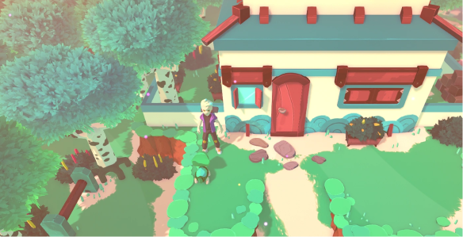

GAME TOWN
Zadar
Description
Zadar is the first area and town in the game. This is where the protagonist starts their adventure by receiving their first Creatures and meeting their rival. Zadar is a town in the south of Deniz that hosts many houses and a lab for studying Creatures. To the north is the Prasine Coast, a path that follows the shoreline. To the east you'll find a beach with a small pier, a perfect spot to watch the waves roll in. The southern end of the village are the cliffs where the island ends, and to the west is a dense forest.
Items
- 8x TemCard (Received from Prof. Konstantinos)
- 8x Balm (Received from Prof. Konstantinos)
- 1x Balm (Hidden in northmost box of western wall in Professor Konstantinos' Lab)
- 1x TC001: Tsunami (Received from Clara)
Trivia
- Unlike most other towns, there is no Temporium in Zadar. Instead, Creatures can be healed by Aina.
- Zadar is the name of a big Croatian city situated on the Adriatic Sea. The Adriatic Sea is the northernmost arm of the Mediterranean Sea.